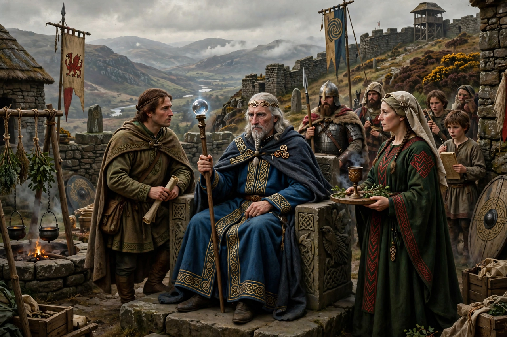

Math fab Mathonwy
Math fab Mathonwy ("Math, son of Mathonwy") is a king of Gwynedd and a powerful magician in Welsh mythology. He is the title figure of the Fourth Branch of the Mabinogi, Math uab Mathonwy, and the uncle of Gwydion, Gilfaethwy, and Arianrhod. Math could hear every word spoken anywhere in his realm if the wind carried it, and unless he was away at war he could not live unless his feet rested in the lap of a virgin.

| Title | King of Gwynedd |
|---|---|
| Residence | Caer Dathyl |
| Nephews | Gwydion, Gilfaethwy |
| Grand-nephew / heir | Lleu Llaw Gyffes |
| Appears in | Fourth Branch of the Mabinogi |
The footholder and the rape of Goewin
Math's footholder is the maiden Goewin. His nephew Gilfaethwy lusts after her, and Gwydion engineers a war with Pryderi of Dyfed — stealing Pryderi's otherworldly pigs by a trick of illusion — so that Math must leave court. In his absence Gilfaethwy rapes Goewin. Math marries Goewin to restore her honour, kills Pryderi in single combat during the war, and punishes his nephews by transforming them into breeding pairs of deer, swine, and wolves for three years.
Arianrhod and Lleu
Seeking a new footholder, Math tests Gwydion's sister Arianrhod by having her step over his magic wand; she gives birth to Dylan ail Don and drops a second small thing, which Gwydion hides and raises — the boy Lleu. Math gives Lleu his name and arms by unwittingly fulfilling the conditions of Arianrhod's curses (tynghedau).
Blodeuwedd and the death of Lleu
To provide Lleu with a wife despite Arianrhod's curse that he shall never have a wife of the race of the earth, Math and Gwydion fashion Blodeuwedd from the flowers of oak, broom, and meadowsweet. She betrays Lleu with Gronw Pebr; Math's court avenges him — Blodeuwedd is turned into an owl, Gronw is slain, and Lleu, who survived in eagle form, is restored by Gwydion.
See also
References
- Davies, Sioned (trans.), The Mabinogion, Oxford World's Classics, 2007.
- MacKillop, James, Dictionary of Celtic Mythology, Oxford University Press, 1998.